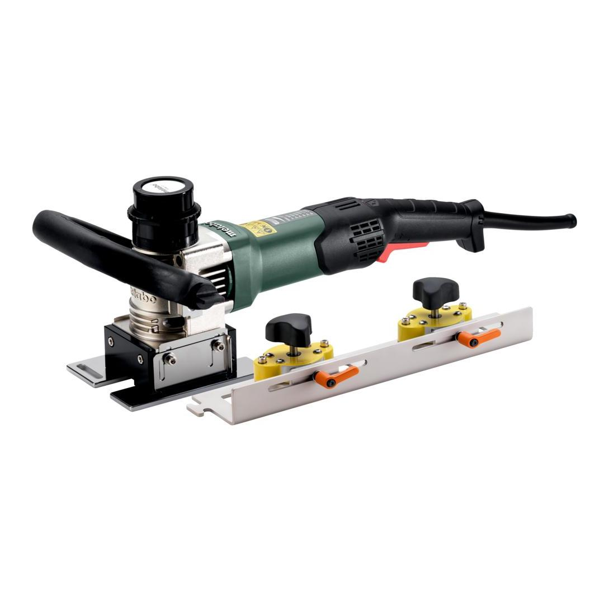
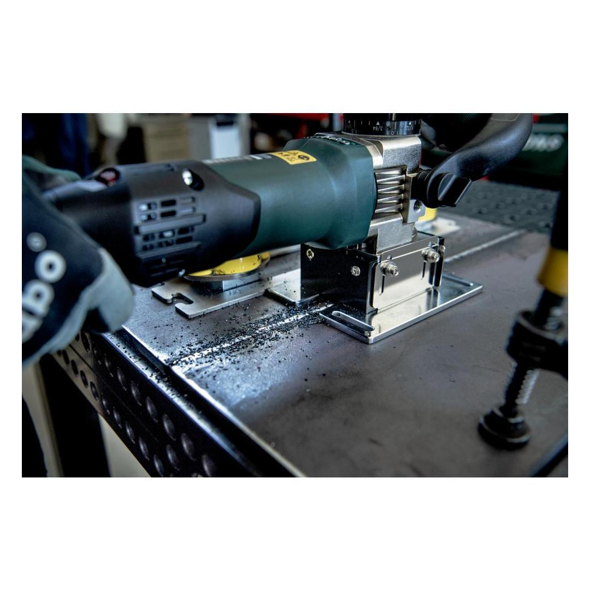
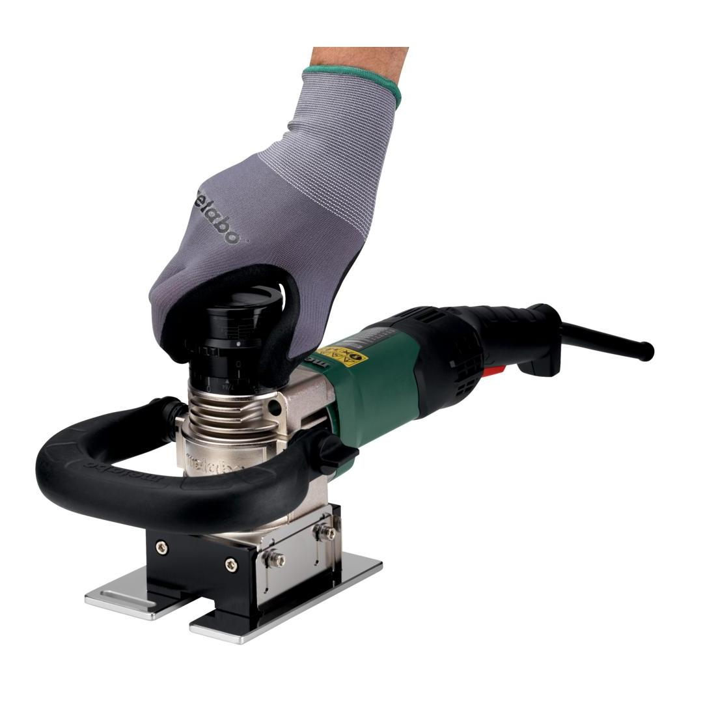
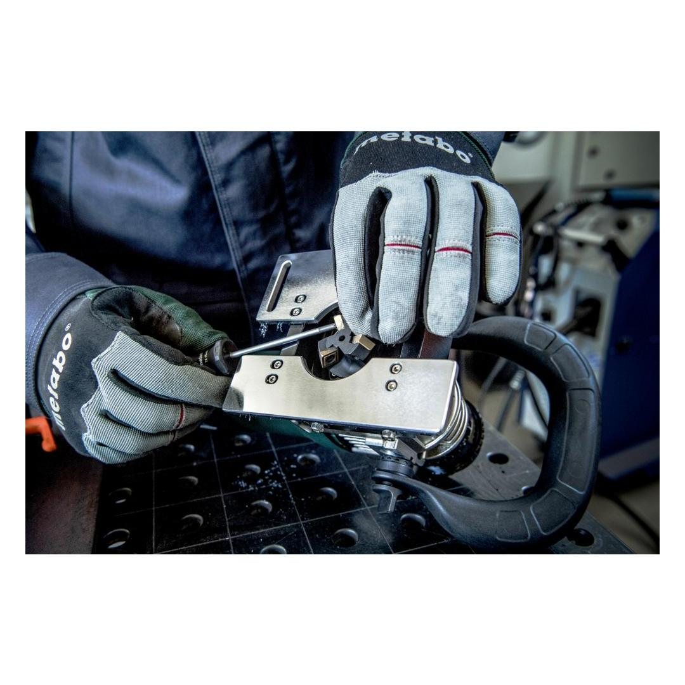
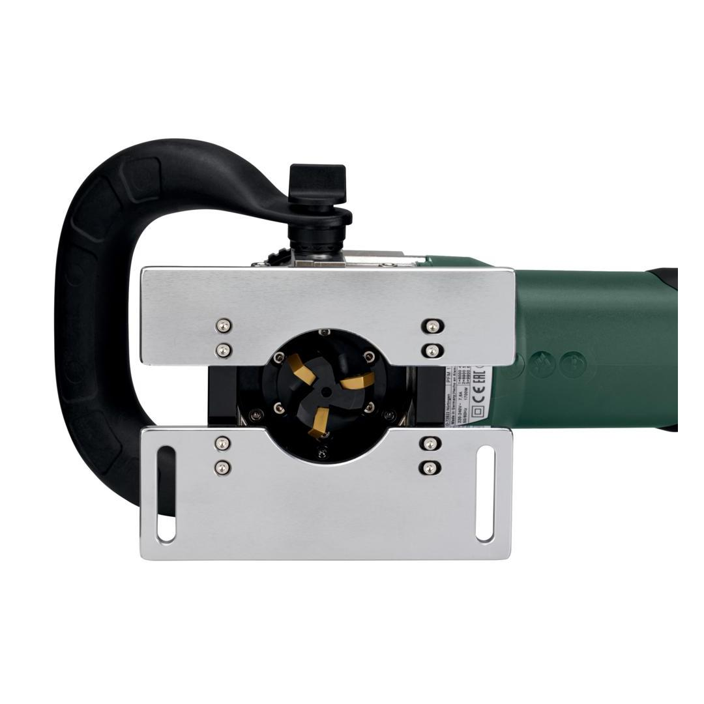
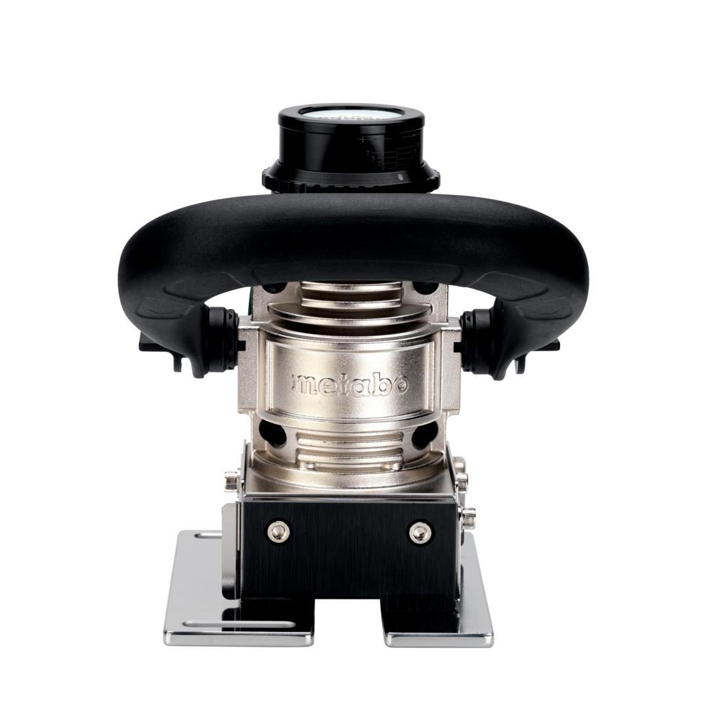
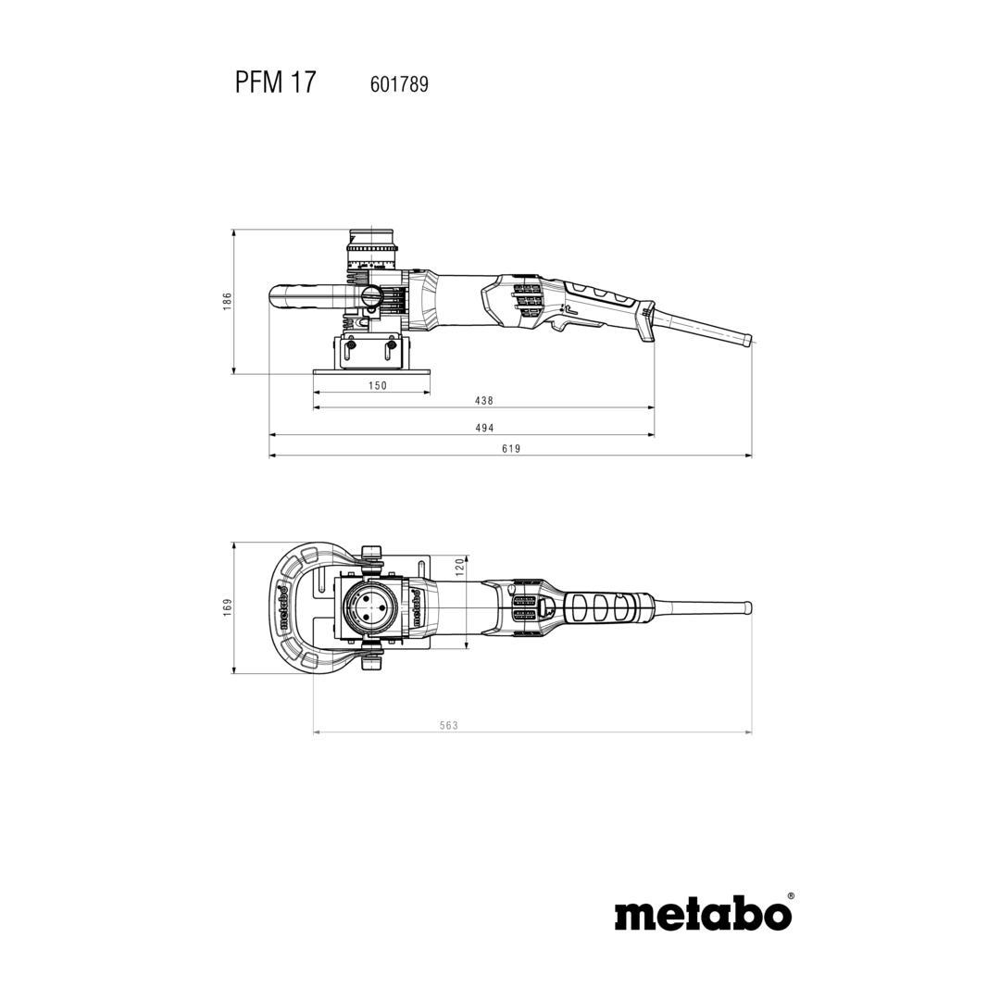

601789500









| Rated input power | 1700 W |
with patented dust protection for long service life
play video Paddle switch with dead man functionfor high user safety
Vario Tacho Constamatic (VTC) Full-wave Electronics with Thumbwheelfor working at customised speeds to suit the application material and speeds that remain almost constant, even under load
Restart protectionprevents unintentional start-up after power supply interruption
Electronic soft startfor smooth start-up
| No-load speed | 8000 - 12600 rpm |
| Rated input power | 1700 W |
| Output power | 970 W |
| Removal width | 25 mm / 0.984 " |
| Removal height | - 1.5 - 10 mm // - 0.059 - 0.39 " |
| Grading of cutting depth setting | 0.1 mm / 0.004 " |
| Weight (without power cable) | 4.6 kg |
| Cable length | 3.6 m |
| Vibration | 4.1 m/s² |
| Uncertainty of measurement K | 1.5 m/s² |
| Sound pressure level | 94 dB(A) |
| Sound power level (LwA) | 102 dB(A) |
| Uncertainty of measurement K | 3 dB(A) |
| Magnetic guide rail (50 cm long) |
| 3 Carbide indexable inserts Universal |
| Bow-type handle |
| Screwdriver for Torx screws 15 |
| Screwdriver SW 4 with T-handle |
| Open-jawed spanner SW 10 |
| metaBOX 280 L |